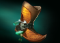

ITEMS
Alucard Shield: NEW ITEM
- Requires:
-
Gold Ring (170)
Vampirism Amulet (300)
Round Shield (250)
Total Cost: 720
-
+3 All Attributes
5% Lifesteal
Restores 10 health whenever the wielder is hit.
Lucky Coin: NEW ITEM
- Cost: 500
- Provides:
-
+3 All Attributes
-
You gain 2-3 extra gold from each unit killed.
Sacrificial Ring: NEW ITEM
- Requires:
-
Wizard's Robe (350)
Recipe (300)
Total Cost: 650
-
+5 Intelligence
+0.5 Mana Regen
-
Kills target creep up to Level 3 and heals the user for 80% of its current health. The creep provides no gold or experience bounty.

Unstable Orb: NEW ITEM
- Cost: 400
- Passive: Mana Burn
-
Your attacks burn 8 mana from the target.
Bladed Blade
- Recipe cost lowered from 500 to 200 (Total cost lowered from 3600 to 3300).
Bloodgod Amulet
- Mana regen increased from 2.5 to 3.5.
- Mana bonus reduced from 500 to 450.
- Movement speed bonus reduced from 10% to 6%.

Breaker of Nightmares
- Strength bonus increased from 36 to 38.

Cage of Life: NEW RECIPE
- Old Recipe:
-
Runed Bracers(1100)
Metal Shard (200)
Magic Tooth (300)
Recipe (600) Total Cost: 2200
-
Runed Bracers(1100)
Metal Shard (200)
Sacrificial Ring (650)
Recipe (150)
Total Cost: 2100

Ciaran's Ring
- Mana regen increased from 2.5 to 3.
Cradle of Bone: REMOVED
- Removed from the game.
Dice's Dice: NEW RECIPE
- Old Recipe:
-
Magic Tooth (300)
Metal Shard (200)
Magic Cube (800)
Total Cost: 1300
-
Magic Tooth (300)
Metal Shard (200)
Lucky Coin (500)
Total Cost: 1000

Diffusion Stone
- Mana regen increased from 2.25 to 2.5.

Enduring Willpower
- Mana regen increased from 1 to 1.5.
Eternal Frenzy
- Active armour loss reduced from 15 to 12.

Golden Sun
- Mana regen increased from 4 to 6.
Hydra's Thirst
- Bonus damage increased from 15 to 20.

Immortalia
- Health bonus increased from 550 to 600.
- Health regen increased from 6 to 6.5.
- Mana regen increased from 4.5 to 5.

Ironside Dancer
- Recipe cost reduced from 1000 to 800 (Total cost lowered from 1925 to 1725).

Jonathan's Willpower
- Mana regen increased from 2.5 to 3.

Loyal Paw
- Agility bonus increased from 18 to 20.
Mage's Skull
- Bonus movement speed reduced from 5% to 3%.

Momentum Boots
- Percentage movement speed bonus reduced from 5% to 4%.

Murder of Crows
- Recipe cost lowered from 850 to 800 (Total cost lowered from 1950 to 1900).
Resonance Bell
- Slow duration increased from 2 seconds to 5 seconds.
Sanguine Fletcher
- Passive Reworked: Now causes the target to bleed for 30 magical damage per second for 4 seconds.
- Health regen increased from 7.25 to 7.5.
- Mana regen increased from 2.5 to 3.
Vendetta's Grasp
- Mana regen increased from 5 to 8.
HEROES

Armordillo:
- Base Strength reduced from 17 to 16.
- Strength gain reduced from 2.2 to 2.0.

Basilisk:
- Expel Acid cooldown reduced from 9/8/7/6 to 7/6/5/4.
Carna:
- Spellsoak manacost reduced from 40 to 0.

Cursed Wolf:
- Rooting Pounce cast range reduced from 600 to 550.

Dark Queen:
- Base Intelligence increased from 15 to 17.
- Hidden Insight vision reduced from 600/1200/1800 to 600/1000/1400.
Eldritch:
- Abominations now have 50% magic resistance.
- Corrupting Field attack speed bonus increased from 10/15/20/25 to 10/20/30/40.
- Become Abomination manacost reduced from 100 to 40.

Ethereal Lancer:
- Agility gain redcued from 3.1 to 2.7.
- Ghost Form now passively gives permanent 7/14/21 agility.
Great Ent:
- Inspiring Song movement speed bonus increased from 16/20/24/28% to 20/24/28/32%.
- Inspiring Song duration increased from 6 to 7.
- Treantic Offering manacost reduced from 250 to 200.
- Treantic Offering cooldown reduced from 160s to 145s.
Huntress:
- Base Agility reduced from 19 to 14.
- Nocked Arrows manacost rescaled from 80/100/120/140 to 125.
Kron the Vanguard:
- Powerful Roar damage increased from 55/110/165/220 to 70/120/170/220.
Merchant:
- Escalating Odds gold as cooldown reduced from 10/7/4% to 8/6/4%.
- Escalating Odds maximum cooldown reduced from 10 minutes to 5 minutes.

Okita:
- Tenmetsu Suru armour reduction radius increased from 225 to 275.
- Zanmato critical damage increased from 200/250/300% to 225/275/325%.

Proxima Centauri:
- Moment of Respite manacost reduced from 100/125/150/175 to 100/115/130/145.

Robot Scientist:
- Cross-Hook cast point reduced from 0.25 to 0.15.

Valkyrie: HERO REWORKED
- New Ability: Blessing of Eir
- New Ability: Vae Victis
- New Ability: Praetor's Thrust
- New Ability: Soaring Fury
Valkyrie instantly heals the target ally and grants them a movement speed buff. The spell's effectiveness is amplified per percentage of missing health.
After a medium delay spears land in the target area, stunning any enemy in the vicinity and dealing damage. The stun is longer in the center.
Valkyrie pierces enemies with her spear, granting her a narrow but long cleave.
Valkyrie gains a damage buff relative to her current health on cast. During the duration, all healing received by her is amplified.

Vampire Mistress:
- Call of the Void movement speed slow increased from 50% to 60%.